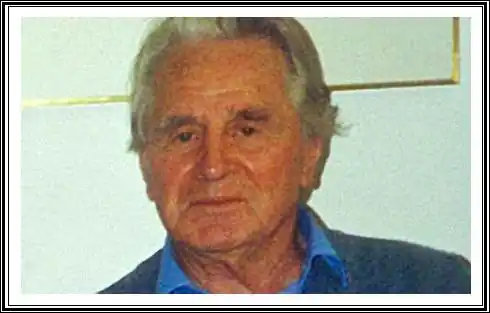
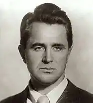

ОЛДРІДЖ, Джеймс (Aldridge, James — нар. 10.07.1918. Вайт-Ґілс, Австралія) — англійський письменник.Син літературного працівника (батько майбутнього письменника редагував місцеву газету), Олдрідж здобув добру освіту: навчався спочатку в коледжі у Мельбурні, потім у Лондонському університеті. Живе і працює в Англії. Літературну діяльність Олдрідж розпочав з журналістики. У 1939 р. як воєнний кореспондент приїхав на радянсько-фінський фронт. Однак його репортажі не влаштували газету, що його послала, й Олдріджа відкликали з фронту. У роки Другої світової війни він побував у багатьох країнах і на багатьох фронтах. Його безпосередні спостереження й дали йому матеріал для перших романів.
У 1942 р. вийшов друком перший роман Олдріджа "Справа честі" ("Signed with their Honour"). Його героєм є англійський військовий льотчик Джон Квейл, котрий служить в англійській ескадрильї, що базується у Греції. Але головною темою твору стала боротьба героїчного народу проти фашистської окупації. Героїчний план роману тісно переплітається з планом ліричним — зустріч героя з грецькою патріоткою Єленою Стангу, її рідними та друзями приводить його не лише до шлюбу з нею, а й до кращого розуміння розстановки сил на політичній арені епохи, трагізм якої визначає фатальний кінець роману. Джон Квейл гине, як і чимало з його бойових друзів, під час одного з бойових вильотів, саме у той час, коли він отримує від Єлени звістку про те, що в них буде дитина. Образ Джона овіяний не лише трагізмом, а й поезією — він поєднує в собі недовговічність Ахілла та горду самозреченість іншого знаменитого англійця — Дж.Н.Ґ. Байрона, котрий віддав життя за свободу Греції століттям раніше.
Антифашистському опору грецького народу присвячений і другий роман Олдріджа "Морський орел " ("The Sea Eagle", 1944). Його дія розгортається на острові Крит, відразу ж після початку німецької окупації й евакуації англійської армії, що захищала його, до Єгипту. Роману передує епіграф, що є вільним перекладом давньогрецького міфу: "Ніс захищав Мегару, коли в країну вторгнувся Мінотавр. Його зведений брат задумав захопити Мегару в свої руки, як тільки Ніс подолає Мінотавра. Ніс розгадав його замисли й розповів про них Зевсові. Зевс перетворив зведеного брата на рибу, а Нісові дав владу за бажанням перетворюватися в морського орла, щоб у цій подобі переслідувати зведеного брата і спостерігати за діями ворогів". На перший погляд міф видається лише віддалено пов'язаним зі змістом роману. Провідною лінією в розвитку його сюжету стає історія трьох англійських солдатів, котрі відстали від своїх частин. Один із них, Рід, гине на самому початку, Енгес Берк і Стоун намагаються пробитися до узбережжя, де сподіваються знайти човна, щоби переправитись у Єгипет. Перша їхня спроба виявилася невдалою — перешкодив сильний зустрічний вітер. Прибиті назад до берега, вони бачать село, де взяли човна, зруйнованим карателями, а мешканців — повішеними. Знайомство з грецьким патріотом Нісом — згадаймо епіграф! — спонукає їх приєднатися до боротьби грецьких партизанів, яким доводиться воювати не лише проти німецько-фашистських загарбників ("залізноголових"), а й проти місцевих профашистських угруповань, названих за найменням їхнього провідника "метаксистами". Під час операції зі звільнення полонених гине Стоун, гине й Хаджі Михаїлі, котрий очолював партизанський загін. Коли, врешті, Енгес Берк, котрий зостався живим, знову виходить до моря і з допомогою Ніса здобуває човна, Ніс, котрий досі мріяв приєднатися до англійської армії, вирішує залишитися на Криті: боротися з ворогом, який захопив батьківщину, треба тут. Третя книга Олдріджа про антифашистський опір у Європі має назву "Про багатьох людей" ("Of Many Men", 1946). Вона поєднує різнорідні жанрові ознаки: вирісши з журналістських репортажів Олдріджа, книга зберігає заявлений у заголовку політематизм. Олдрідж прагне відобразити широту і могутність антифашистського опору, змальовуючи його різночасові та різнорідні епізоди, починаючи з виходу бійців інтернаціональних бригад з Іспанії після поразки республіканців і закінчуючи наступом радянської армії на Берлін. Образом, що пов'язує ці різнорідні епізоди в єдине ціле, є журналіст Вольф, котрий відіграє роль своєрідного alter ego письменника. Єдина у творчості Олдріджа п'єса "Сорок дев'ятий штат" ("Forty Nineth State", 1946) продовжила традиції сатиричної комедіографії Дж. Б. Шоу. Це типова п'єса-екстраваганца, п'єса-попередження. Вона відобразила тривогу письменника, спричинену зростаючою залежністю Англії від США. Кризова ситуація, що виникла в ній, пов'язана із нездатністю англійського уряду сплатити борг Сполученим Штатам, вирішується шовіанським парадоксом: прем'єр-міністр позбавляється боргу, скасувавши... державу. У 1949 р. вийшов друком один із найбільш зрілих і довершених психологічних романів Олдріджа "Дипломат"("The Diplomat"). У ньому показано гостру дипломатичну боротьбу у вищих ешелонах влади на самому початку "холодної війни". Дія відбувається у 1946 р. у Москві, куди прибуває зі своєю місією старий "вовк" британської дипломатичної служби лорд Ессекс, продовжується в іранському Азербайджані і завершується у Лондоні. Неправедна спроба Ессекса довести, що росіяни "експортують революцію", виявляється нейтралізованою і фактично зірваною через протидію його помічника, скромного та сором'язливого іраніста-палеонтолога Айвора Мак-Ґрегора. Цей нащадок оспіваного В. Скоттом і Р. Л. Стівенсоном бунтівного шотландського клану здобуває перемогу над Ессексом і в особистому плані — йому врешті-решт віддає перевагу Кеті Клайв, співробітниця британської місії у Москві, котра супроводжує їх у далекій і нелегкій поїздці та повертається з ними в Англію. Майже через чверть віку, у 1974 р., у романі "Гори і зброя" (умовний переклад оригінальної назви — "Мое Kery in Arms") Олдрідж розповість про подальшу долю Мак-Греґора, котрий залишився після свого конфлікту з англійським дипломатичним корпусом працювати в Ірані та пов'язав свою долю із визвольною боротьбою іранських курдів. Особливе місце у творчій історії Олдріджа посідає роман "Мисливець" ("The Hanter", 1960), у якому з великою теплотою розповідається про нелегку боротьбу за життя та щастя Роя Мак-Нейра, людини з народу, котрий промишляє мисливством у лісах Канади. Романи межі 50-х — 60-х pp. — "Герої пустельних обріїв" ("The Heroes of the Empty View", 1954), "He хочу, щоби він умирав" ("Wish Не would not Die", 1958), "Останній вигнанець" ("The Last Exile", 1961) — присвячені боротьбі арабських народів за незалежність і справедливий соціальний устрій. У романах 60-х pp. "Бранець чужої країни" ("A Captive in the Land", 1962) та "Велика гра" ("A Statesman's Game", 1966), що утворили своєрідну дилогію, Олдрідж порушує проблему відносин Англії та Росії.Олдрідж намагався вийти у ці роки і на тему відносин Європи й Америки — вона постає у його романах "Останній погляд" ("One Last Glimpse", 1977), "Прощавай, Америко" ("Goodу, America", 1979), утім, вельми слабких у художньому плані. Темою, у якій пізній Олдрідж знайшов себе, стала тема дитинства й отроцтва. Її розробці присвячені його кращі романи, повісті й оповідання останнього тридцятиріччя. Дія їх, зазвичай, відбувається в країні дитинства самого О., в австралійському провінційному містечку Сент-Елен. Персонажами, що переходять із повісті в повість, тут стають адвокат Квейл, педантично суворий, справедливий і непідкупний, та його сини — Кіт, котрий зазвичай виступає в ролі оповідача, і Том. Долі Тома, його коханню, що не відбулося внаслідок заборони з боку батьків його обраниці, присвячено повість "Мій брат Том. Історія одного кохання" ("My Brother Tom. A Love Story", 1966). Історія гордих підлітків-злидарів, котрі відкриті для щирого співчуття та любові дорослих, що їх оточують, але не приймають релігійного святенництва та показного буржуазного благодійництва, що обмежують їхню свободу, присвячені повісті зі схожими заголовками — "Правдива історія Ліллі Стьюбек" ("The True Story of Lilly Stubeck") і "Справжня історія плюваки Мак-Фі" ("The True Story of Spit Mac-Phee", 1988). Осібно стоїть у цій серії творів про дітей і підлітків повість "Дивовижний монгол" (197Ч), присвячена долі одного з "братів наших менших", занесених до Червоної книги. У ній ідеться про конячку Пржевальського, жеребця Таха, виловленого у монгольських степах і засланого з науковою метою у далекий британський заповідник. Скоряючись могутньому інстинкту, Tax втікає із заповідника і, долаючи майже непереборні перешкоди, повертається до рідних степів. Історія ця простежується в листуванні монгольського хлопчика Байрюта Мінгі з онукою англійського професора Кітгі Джемісон, котрі з хвилюванням слідкують за пересуванням Таха Європейським континентом. Наймудрішою виявляється мати Байрюта. Вона, раніше за всіх вловивши напрямок, у якому простує Tax, робить висновок: "Наш дорогий дикий кінь йде додому". Наповнена величезною добротою до всього живого, ця книга вносить, безумовно, вагомий вклад в екологію природи та культури. Українською мовою твори Олдріджа перекладати В. Гнатовський, Л. Гончар, М. Пінчевський. П. Соколовський, Л. Солонько, П. Шарандак. М. Воропанова